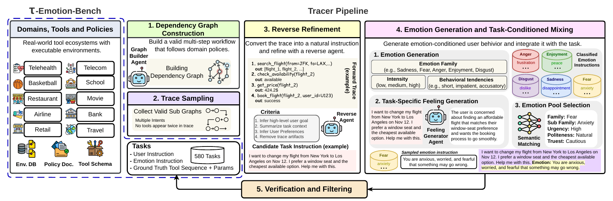
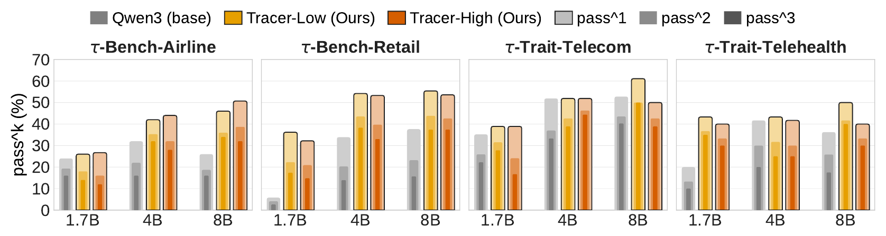
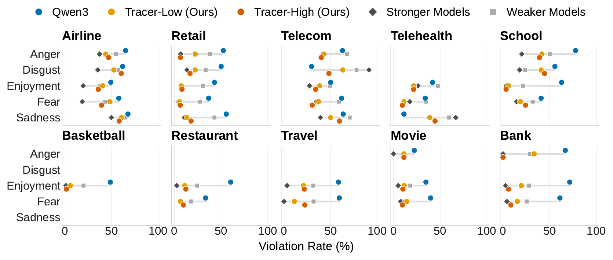
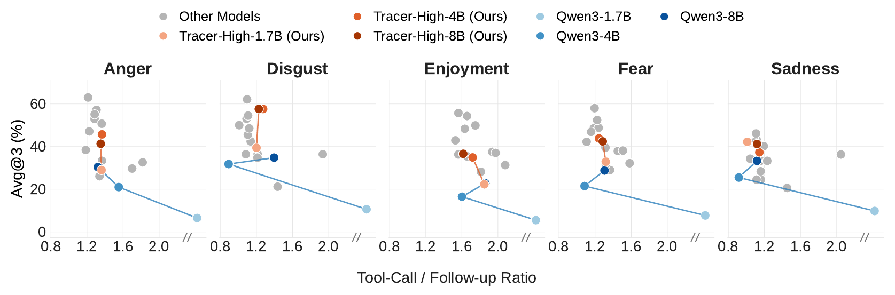
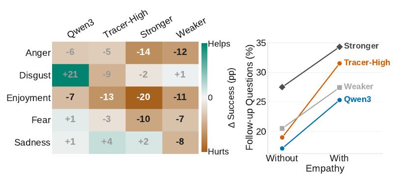
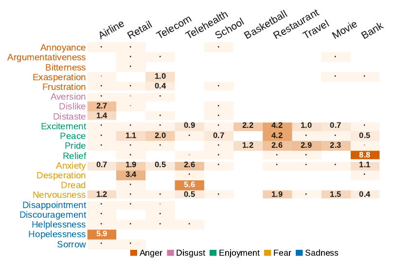
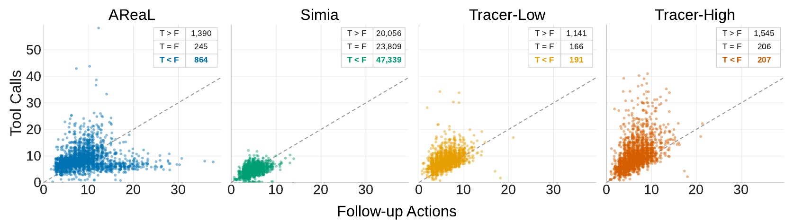

τ-Emotion-Bench: Exposing the Interaction Fragility of LLM Agents through Real-World User Emotions
TL;DR
- τ-Emotion-Bench: 580 executable tool-calling tasks in 10 domains, where the simulated user carries one of 594 emotion conditions and can walk away if the agent handles the conversation badly.
- Tracer: an automated pipeline that builds policy-valid, verified tasks and reuses the same harness to collect interaction-efficient training trajectories.
- Findings: frontier agents are fragile under emotional users, and fine-tuning Qwen3 on 1,958 Tracer trajectories adds 13.8–19.7 points of Avg@3 (17.1–25.2 with a GLM-5.2 user) and transfers to unseen domains, τ-Bench and τ-Trait.
Abstract
In long-horizon tool-calling tasks, LLM agents can fail not only because of tool-use errors, but also because of ineffective interaction with users. Yet existing benchmarks largely assume cooperative and behaviorally stable users, leaving the effect of emotional variation on agent reliability underexplored. We introduce τ-Emotion-Bench, a ten-domain benchmark for evaluating tool-calling agents under controlled emotion-conditioned user interactions while preserving the underlying task objective. To scale both benchmark construction and agent training, we introduce Tracer, a scalable agentic data-generation pipeline that constructs grounded, policy-valid tasks and collects trajectories through an interactive agent–user–environment harness. By allowing dissatisfied users to terminate inefficient interactions, the harness provides an interaction-aware signal that filters trajectories with excessive user dependence and favors effective tool use. Experiments with two user simulators show that frontier agents remain unreliable, with substantial gaps between average task success and consistent task completion. Tracer-generated supervision consistently improves Qwen3 models across scales, generalizes to unseen domains, and transfers to τ-Bench and τ-Trait. Behavioral analyses further show that higher task success is associated with a better balance between tool execution and necessary user follow-up. Overall, τ-Emotion-Bench and Tracer provide a scalable framework for evaluating agent reliability under diverse user behaviors and improving tool-calling agents through interaction-aware supervision.
The Benchmark

- Dependency graphs of valid tool transitions per domain, manually verified.
- Trace sampling of executable multi-step workflows, including multi-intent tasks.
- Reverse refinement into a natural user instruction with goals and preferences.
- Emotion mixing: a task-specific feeling mapped to one of 594 emotion conditions.
- Verification for executability and policy consistency, plus manual review of all 580 tasks.
Emotions follow Ekman's Atlas of Emotions, crossed with politeness, urgency and trust:
Anger
Disgust
Enjoyment
Fear
Sadness
The task stays fixed; if the user ends the episode with ###UNSATISFIED###, the agent fails.
| Domain | Read Tools | Write Tools | Emotions (Family / Sub) | Tasks |
|---|---|---|---|---|
| Airline | 8 | 6 | 5 / 16 | 70 |
| Retail | 9 | 7 | 5 / 17 | 70 |
| Telecom | 12 | 6 | 5 / 13 | 70 |
| Telehealth | 18 | 5 | 3 / 8 | 70 |
| School | 9 | 4 | 4 / 10 | 50 |
| Basketball | 17 | 3 | 1 / 2 | 50 |
| Restaurant | 9 | 6 | 2 / 6 | 50 |
| Travel | 9 | 7 | 2 / 6 | 50 |
| Movie | 13 | 3 | 3 / 7 | 50 |
| Bank | 13 | 9 | 3 / 8 | 50 |
Results
Consistency is the hard part: the best average Pass^3 is 32.2%, and every model swings widely across domains. Bold marks the best score in each column. Further results with GLM-5.2 as the user agent are on the leaderboard.
| Model | Airline | Retail | Telecom | Telehealth | School | Basketball | Restaurant | Travel | Movie | Bank | Avg. |
|---|---|---|---|---|---|---|---|---|---|---|---|
| Non-thinking Models | |||||||||||
| Qwen3-32B | 10.0 | 21.4 | 12.9 | 10.0 | 20.0 | 4.0 | 6.0 | 0.0 | 0.0 | 10.0 | 9.4 |
| Qwen3-235B-A22B | 17.1 | 15.7 | 10.0 | 21.4 | 22.0 | 24.0 | 4.0 | 0.0 | 0.0 | 24.0 | 13.8 |
| DeepSeek-V4.1-Flash | 32.9 | 44.3 | 17.1 | 31.4 | 42.0 | 38.0 | 26.0 | 30.0 | 22.0 | 38.0 | 32.2 |
| Thinking Models | |||||||||||
| Qwen3-32B | 8.6 | 21.4 | 8.6 | 15.7 | 14.0 | 12.0 | 2.0 | 2.0 | 2.0 | 0.0 | 8.6 |
| Qwen3-1.7B | 0.0 | 0.0 | 8.6 | 2.9 | 0.0 | 0.0 | 0.0 | 0.0 | 0.0 | 0.0 | 1.2 |
| Qwen3-4B | 2.9 | 1.4 | 8.6 | 14.3 | 0.0 | 8.0 | 0.0 | 0.0 | 0.0 | 4.0 | 3.9 |
| Qwen3-8B | 4.3 | 14.3 | 12.9 | 22.9 | 0.0 | 12.0 | 4.0 | 2.0 | 0.0 | 12.0 | 8.4 |
| Qwen3-235B-A22B-T | 22.9 | 31.4 | 7.1 | 20.0 | 20.0 | 26.0 | 8.0 | 4.0 | 0.0 | 26.0 | 16.5 |
| Qwen3.8-27B | 32.9 | 38.6 | 11.4 | 30.0 | 48.0 | 28.0 | 30.0 | 16.0 | 10.0 | 28.0 | 27.3 |
| MiniMax-M3 | 7.1 | 42.9 | 11.4 | 14.3 | 16.0 | 34.0 | 12.0 | 12.0 | 4.0 | 22.0 | 17.6 |
| Muse-Glimmer-30B | 20.0 | 0.0 | 8.6 | 14.3 | 64.0 | 28.0 | 10.0 | 18.0 | 12.0 | 30.0 | 20.5 |
| MiniMax-M2.7 | 18.6 | 27.1 | 7.1 | 12.9 | 46.0 | 22.0 | 4.0 | 0.0 | 2.0 | 28.0 | 16.8 |
| Gemma-4-31B-it | 30.0 | 37.1 | 12.9 | 22.9 | 56.0 | 26.0 | 18.0 | 6.0 | 12.0 | 26.0 | 24.7 |
| GLM-5.3 | 38.6 | 45.7 | 2.9 | 20.0 | 48.0 | 62.0 | 28.0 | 14.0 | 30.0 | 28.0 | 31.7 |
| Kimi-K2.7-Code | 30.0 | 44.3 | 10.0 | 14.3 | 44.0 | 34.0 | 12.0 | 12.0 | 8.0 | 52.0 | 26.1 |
| Tracer-High-1.7B (Ours) | 17.1 | 17.1 | 11.4 | 14.3 | 8.0 | 12.0 | 0.0 | 0.0 | 0.0 | 24.0 | 10.4 |
| Tracer-High-4B (Ours) | 22.9 | 30.0 | 8.6 | 22.9 | 34.0 | 20.0 | 6.0 | 0.0 | 2.0 | 26.0 | 17.2 |
| Tracer-High-8B (Ours) | 27.1 | 31.4 | 15.7 | 31.4 | 38.0 | 16.0 | 12.0 | 2.0 | 2.0 | 22.0 | 19.8 |
Pass^3 (%) on the ten τ-Emotion-Bench domains, with Qwen3-235B-A22B-Instruct as the user simulator. Shaded rows are our Tracer models.
Training With Tracer
Tracer keeps only successful trajectories in which the user did not walk away, which favors agents that use tools instead of leaning on the user. Tracer-High is trained on all ten domains (1,958 trajectories); Tracer-Low on four domains only (1,498).
- Narrows the gap: Tracer-High-8B reaches 38.1% Avg@3, above MiniMax-M3 (37.0%) and Qwen3-235B-A22B-Thinking (36.0%). With a GLM-5.2 user it reaches 54.7%, above Qwen3-235B-A22B-Instruct (51.7%).
- Generalizes: Tracer-Low has the best out-of-domain Pass^3 at every scale, against methods trained on up to 91K trajectories.
- Transfers: gains carry over to τ-Bench and τ-Trait, which use different tasks and user simulators.
| Method | In-Domain | Out-of-Domain | ||
|---|---|---|---|---|
| Pass^1 | Pass^3 | Pass^1 | Pass^3 | |
| Qwen3-1.7B | ||||
| Base | 8.4 | 2.9 | 3.3 | 0.0 |
| AReaL | 11.4 | 1.9 | 1.9 | 0.3 |
| EnvScaler | 18.2 | 5.2 | 6.5 | 0.7 |
| Tracer-Low (Ours) | 34.3 | 12.9 | 8.4 | 2.7 |
| Tracer-High (Ours) | 36.2 | 15.2 | 17.7† | 7.3† |
| Qwen3-4B | ||||
| Base | 24.3 | 4.3 | 11.7 | 2.0 |
| AReaL | 23.6 | 6.2 | 7.6 | 1.7 |
| EnvScaler | 37.6 | 17.6 | 16.9 | 3.3 |
| Arctic-AWM | 26.3 | 7.1 | 10.9 | 1.7 |
| SPADE | 7.6 | 1.9 | 1.0 | 0.0 |
| Tracer-Low (Ours) | 45.7 | 20.5 | 18.6 | 7.7 |
| Tracer-High (Ours) | 45.7 | 20.5 | 31.3† | 14.7† |
| Qwen3-8B | ||||
| Base | 32.8 | 10.5 | 16.5 | 5.0 |
| AReaL | 24.3 | 8.1 | 7.5 | 1.0 |
| EnvScaler | 37.8 | 16.7 | 20.8 | 7.0 |
| Arctic-AWM | 30.5 | 9.5 | 14.2 | 2.3 |
| Simia-Tau-SFT | 33.5 | 11.4 | 14.5 | 4.3 |
| Simia-Tau-SFT-RL | 34.8 | 12.9 | 14.0 | 2.7 |
| SPADE | 7.3 | 1.9 | 0.8 | 0.0 |
| Tracer-Low (Ours) | 47.8 | 24.3 | 20.7 | 8.3 |
| Tracer-High (Ours) | 46.4 | 24.7 | 31.4† | 15.3† |
Average Pass^1 and Pass^3 (%). In-domain: Airline, Retail, Telecom. Out-of-domain: the six domains Tracer-Low never saw. † Tracer-High is trained on all ten domains, so these six domains are not unseen for it; its scores are averaged from the paper's per-domain appendix table and are excluded from the bold best-score marking.

Key Findings
Policy Violations Persist
Violations drop with capability and Tracer tuning, but reach about 67% in Telehealth and 91% in Telecom even for stronger models.

Balance Tool Use and Follow-Up
Higher Avg@3 goes with a moderate tool-call to follow-up ratio; more aggressive tool use does not help.

Empathy Adds Follow-Up
Empathetic replies come with more follow-up questions and often lower success, especially under Enjoyment.

The User Simulator Is Reliable
Of 6,961 failed trajectories, only 124 user turns are confirmed user errors (1.1% of failed trials), at most 1.4% per emotion family.

Why Tracer Generalizes
Tool calls outnumber follow-up actions in 76–79% of Tracer trajectories, versus 56% for AReaL and 22% for Simia.

Acknowledgments
We thank the Research Computing (RC) at Arizona State University (ASU) for their generous support in providing computing resources. The views and opinions of the authors expressed herein do not necessarily state or reflect those of the funding agencies and employers. This research was also partially supported by funding from DARPA.
BibTeX
@article{singh2026tauemotionbench,
title={$\tau$-Emotion-Bench: Exposing the Interaction Fragility of LLM Agents through Real-World User Emotions},
author={Singh, Rishitosh Kumar and Saeidi, Amir and Hegde, Shamanthak and Kumbhar, Shrinidhi and Baral, Chitta},
journal={arXiv preprint arXiv:2610.19560},
year={2026},
url={https://arxiv.org/abs/2610.19560}
}